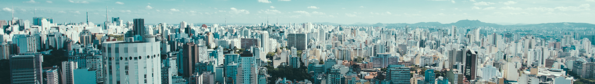

.png)
Limeira, conhecida como a "Cidade das Laranjas", é um município vibrante localizado no interior do estado de São Paulo. Com uma rica história, marcada pelo desenvolvimento econômico, cultural e social, Limeira se destaca pela sua hospitalidade e pela qualidade de vida que oferece a seus moradores e visitantes.
Com uma localização estratégica, Limeira está próxima das grandes metrópoles, o que facilita o acesso a diversas regiões do país. A cidade possui uma infraestrutura moderna, com excelente oferta de serviços públicos, saúde, educação e lazer, garantindo um ambiente seguro e acolhedor para todas as idades. Além disso, Limeira é um importante centro comercial e industrial, sendo referência na produção de peças para o setor metalmecânico, calçadista e agroindustrial. O município também é conhecido por sua tradição cultural, com festas populares, apresentações musicais e eventos que valorizam a cultura local.

Limeira é uma cidade localizada no interior do estado de São Paulo, conhecida por sua importância histórica, econômica e cultural. Situada a cerca de 150 quilômetros da capital paulista, Limeira tem uma população de aproximadamente 300 mil habitantes, o que a torna uma das cidades de porte médio da região. Seu nome, que remete ao fruto da limoeiro, é uma alusão à abundância dessa planta na região, especialmente no período colonial

Principais pontos turisticos: 1. Praça Toledo Barros: A Praça Toledo Barros é um dos cartões-postais de Limeira. Localizada no centro da cidade, ela é o lugar perfeito para um passeio tranquilo. A praça possui ampla área verde, uma gruta e um bonito paisagismo, sendo muito frequentada tanto por moradores quanto por turistas. Destaque: Além de ser um excelente espaço para caminhadas e relaxamento, a praça também abriga eventos culturais e festivais ao longo do ano, como shows e feiras de artesanato...

Esportes em Limeira: Limeira é uma cidade que oferece diversas opções para a prática de esportes, com infraestrutura de qualidade e apoio a atividades para todas as idades. O município conta com centros esportivos, campos de futebol, quadras de tênis e uma variedade de modalidades para quem deseja praticar esportes ou acompanhar competições...
MARIO CELSO BOTION (2021)
limeirense
580,711 km² (2022)
291.869 pessoas (2022)
502,61 hab/km² (2022)
97,7% (2010)
0,775 (2010)
12,6 óbitos por mil nascidos vivos (2022)
R$ 1.738.527.698,71 (2023)
R$ 1.782.064.378,00 (2023)
R$ 51.678,31 (2021)